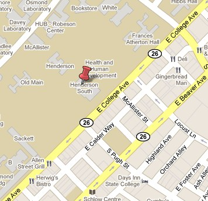

Week 10 Maps, Borders, Demarcations

You are NOT here... or there... or anywhere else... or are you?
Off the GPS.
Identifying worlds: Your GPS, The WOrld, and You
Tuesday, March 15, 2011
Week 10 Maps, Borders, Demarcations
Lem, Microworlds, 233-242
“Of Exactitude in Science
...In that Empire, the craft of Cartography attained such Perfection that the Map of a Single province covered the space of an entire City, and the Map of the Empire itself an entire Province. In the course of Time, these Extensive maps were found somehow wanting, and so the College of Cartographers evolved a Map of the Empire that was of the same Scale as the Empire and that coincided with it point for point. Less attentive to the Study of Cartography, succeeding Generations came to judge a map of such Magnitude cumbersome, and, not without Irreverence, they abandoned it to the Rigours of sun and Rain. In the western Deserts, tattered Fragments of the Map are still to be found, Sheltering an occasional Beast or beggar; in the whole Nation, no other relic is left of the Discipline of Geography.
From Travels of Praiseworthy Men (1658) by J. A. Suarez Miranda”
The piece was written by Jorge Luis Borges and Adolfo Bioy Casares. English translation quoted from J. L. Borges, A Universal History of Infamy, Penguin Books, London, 1975.
Xtranormal Assignment Explained (due date March 29)
Castronova, Bell, Cornell, Cummings, Falk, Ross, Field, “Synthetic Worlds as Experimental Instruments”